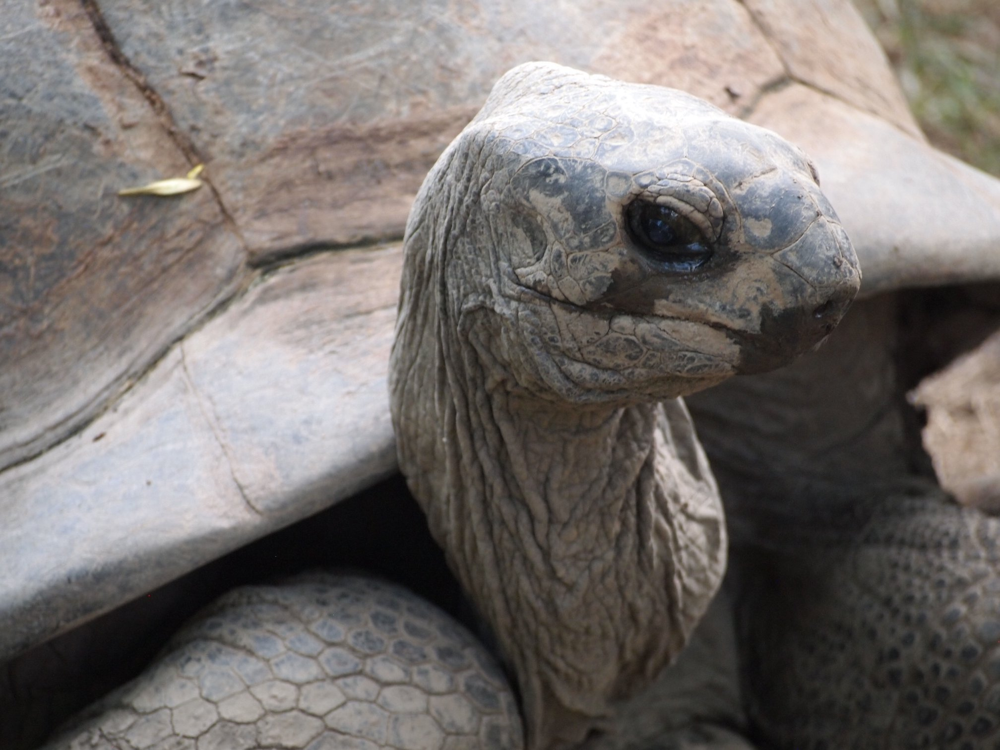

<text> <front> <docTitle> <titlePart>Die Schildkröte</titlePart> </docTitle> </front> <body> <lg rhyme="abab"> <l> <w lemma="ich" notation="I">»Ich </w> <w lemma="sein" notation="am">bin </w> <w lemma="nun" notation="now">nun </w> <w lemma="tausend" notation="a thousand">tausend </w> <w lemma="Jahr" notation="years">Jahre </w> <w lemma="alt" notation="old" rhyme="a">alt </w> </l> <l> <w lemma="und" notation="and">und </w> <w lemma="werden" notation="become">werde </w> <w lemma="täglich" notation="daily">täglich </w> <w lemma="alt" notation="older;" rhyme="b">älter; </w> </l> <l> <w lemma="der" notation="the">der </w> <w lemma="Gotenkönig" notation="king of the Goths">Gotenkönig </w> <w lemma="Theobald" notation="Theobald" rhyme="a">Theobald </w> </l> <l> <w lemma="erziehen" notation="raised">erzog </w> <w lemma="ich" notation="me">mich </w> <w lemma="in" notation="in a">im </w> <w lemma="Behälter" notation="container." rhyme="b">Behälter. </w> </l> </lg> <lg rhyme="abab"> <l> <w lemma="seitdem" notation="Since then">Seitdem </w> <w lemma="sein" notation="have">ist </w> <w lemma="mancherlei" notation="various things">mancherlei </w> <w lemma="geschehen" notation="happened," rhyme="a">geschehn, </w> </l> <l> <w lemma="doch" notation="but">doch </w> <w lemma="wissen" notation="know">weiß </w> <w lemma="ich" notation="I">ich </w> <w lemma="nichts" notation="nothing">nichts </w> <w lemma="davon" notation="of that;" rhyme="b">davon; </w> </l> <l> <w lemma="zu" notation="at">zur </w> <w lemma="Zeit" notation="the time,">Zeit, </w> <w lemma="da" notation="there">da </w> <w lemma="lassen" notation="allowed">läßt </w> <w lemma="für" notation="for">für </w> <w lemma="Geld" notation="money">Geld </w> <w lemma="ich" notation="me">mich </w> <w lemma="sehen" notation="to be seen" rhyme="a">sehn </w> </l> <l> <w lemma="ein" notation="a">ein </w> <w lemma="Kaufmann" notation="merchant">Kaufmann </w> <w lemma="zu" notation="at">zu </w> <w lemma="Heilbronn" notation="Heilbronn" rhyme="b">Heilbronn.</w> </l> </lg> <lg rhyme="abab"> <l> <w lemma="ich" notation="I">Ich </w> <w lemma="kennen" notation="know">kenne </w> <w lemma="nicht" notation="not">nicht </w> <w lemma="das" notation="of">des </w> <w lemma="Tod" notation="Death's">Todes </w> <w lemma="Bild" notation="image" rhyme="a">Bild </w> </l> <l> <w lemma="und" notation="and">und </w> <w lemma="nicht" notation="not">nicht </w> <w lemma="das" notation="of">des </w> <w lemma="Sterben" notation="Dying's">Sterbens </w> <w lemma="Not" notation="urgency:" rhyme="b">Nöte: </w> </l> <l> <w lemma="ich" notation="I">Ich </w> <w lemma="sein" notation="am">bin </w> <w lemma="die" notation="the">die </w> <w lemma="Schild" notation="shield">Schild - </w> <w lemma="ich" notation="I">ich </w> <w lemma="sein" notation="am">bin </w> <w lemma="die" notation="the">die </w> <w lemma="Schild" notation="shield" rhyme="a">Schild - </w> </l> <l> <w lemma="ich" notation="I">ich </w> <w lemma="sein" notation="am">bin </w> <w lemma="die" notation="the">die </w> <w lemma="Schild" notation="shield">Schild - </w> <w lemma="Kröte" notation="toe">krö - </w> <w lemma="Kröte" notation="toad." rhyme="b">kröte.«</w> </l> </lg> </body> <back> <author>Christian Morgenstern</author> <source>Alle Galgenlieder, 1932</source> </back> </text>
[
{theWord:"alt", partOfSpeech:"adjective", gender:"", definition:"old, ancient"},
{theWord:"Behälter", partOfSpeech:"noun", gender:"masculine", definition:"container"},
{theWord:"Bild", partOfSpeech:"noun", gender:"neuter", definition:"image, picture"},
{theWord:"da", partOfSpeech:"adverb", gender:"", definition:"there, then"},
{theWord:"davon", partOfSpeech:"adverb", gender:"", definition:"from that"},
{theWord:"das", partOfSpeech:"article", gender:"neuter", definition:"the"},
{theWord:"der", partOfSpeech:"article", gender:"masculine", definition:"the"},
{theWord:"die", partOfSpeech:"article", gender:"feminine", definition:"the"},
{theWord:"doch", partOfSpeech:"conjunction", gender:"", definition:"though, but"},
{theWord:"ein", partOfSpeech:"article", gender:"", definition:"a, an"},
{theWord:"erziehen", partOfSpeech:"verb", gender:"", definition:"to nurture"},
{theWord:"für", partOfSpeech:"preposition", gender:"", definition:"for"},
{theWord:"Geld", partOfSpeech:"noun", gender:"neuter", definition:"money"},
{theWord:"geschehen", partOfSpeech:"verb", gender:"", definition:"to occur, happen"},
{theWord:"Gotenkönig", partOfSpeech:"noun", gender:"masculine", definition:"king of the Goths"},
{theWord:"Heilbronn", partOfSpeech:"noun", gender:"neuter", definition:"city in Baden-Württemberg"},
{theWord:"ich", partOfSpeech:"pronoun", gender:"", definition:"I"},
{theWord:"in", partOfSpeech:"preposition", gender:"", definition:"in, at"},
{theWord:"Jahr", partOfSpeech:"noun", gender:"neuter", definition:"year"},
{theWord:"Kaufmann", partOfSpeech:"noun", gender:"masculine", definition:"merchant, trader"},
{theWord:"kennen", partOfSpeech:"verb", gender:"", definition:"to know, to be familiar with"},
{theWord:"Kröte", partOfSpeech:"noun", gender:"feminine", definition:"toad"},
{theWord:"lassen", partOfSpeech:"verb", gender:"", definition:"to let, to cause"},
{theWord:"mancherlei", partOfSpeech:"adjective", gender:"", definition:"various"},
{theWord:"nicht", partOfSpeech:"adverb", gender:"", definition:"not"},
{theWord:"nichts", partOfSpeech:"pronoun", gender:"neuter", definition:"nothing"},
{theWord:"Not", partOfSpeech:"verb", gender:"feminine", definition:"need, poverty, emergency"},
{theWord:"nun", partOfSpeech:"adverb", gender:"", definition:"now, then"},
{theWord:"Schild", partOfSpeech:"noun", gender:"masculine", definition:"shield"},
{theWord:"sehen", partOfSpeech:"verb", gender:"", definition:"to see, to look at"},
{theWord:"sein", partOfSpeech:"verb", gender:"", definition:"to be"},
{theWord:"seitdem", partOfSpeech:"conjunction", gender:"", definition:"since"},
{theWord:"Sterben", partOfSpeech:"noun", gender:"neuter", definition:"dying"},
{theWord:"täglich", partOfSpeech:"adverb", gender:"", definition:"daily"},
{theWord:"tausend", partOfSpeech:"numeral", gender:"", definition:"thousand"},
{theWord:"Theobald", partOfSpeech:"proper noun", gender:"", definition:"Theobald"},
{theWord:"Tod", partOfSpeech:"noun", gender:"masculine", definition:"death"},
{theWord:"und", partOfSpeech:"conjunction", gender:"", definition:"and"},
{theWord:"werden", partOfSpeech:"verb", gender:"", definition:"to become"},
{theWord:"wissen", partOfSpeech:"verb", gender:"", definition:"to know"},
{theWord:"Zeit", partOfSpeech:"noun", gender:"feminine", definition:"time"},
{theWord:"zu", partOfSpeech:"preposition", gender:"", definition:"to, at"}
]